1032D12 TIMING SYSTEM PROTECTIVE COVER(S) - R + R
- Path
- Procedures > 10 ENGINE UNIT > 1032 TIMING SYSTEM > 1032D TIMING SYSTEM PROTECTIONS > 1032D12 TIMING SYSTEM PROTECTIVE COVER(S) - R + R
- Kind
- repair procedure (removal / refitting; the operation number is the code)
- Applies to
- all engines; all production periods
- Interactive page
- https://sloeber94.github.io/elrnDB-fDct/en/#/244000713
Applies to: engines: 2.3 JTD 16V; all production periods
 Removing
Removing
 Refitting
Refitting- Position the vehicle on the lift.
- Raise the vehicle.
Op. 7055B54 UNDER-ENGINE GUARD - R R
Op. 4450B04 RIGHT FRONT WHEEL R R
Op. 1092B72 POWER STEERING PUMP DRIVE BELT - ALTERNATOR - R&R
See in Op. 1092A10
1. Undo the fixing bolt.
2. Remove the engine components drive belt automatic tensioner.
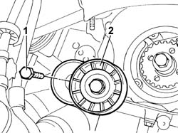
Applies to: engines: 2.3 JTD 16V; all production periods
1. Undo the fixing bolt.
2. Remove the engine components drive belt fixed tensioner.
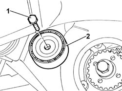
Applies to: engines: 2.3 JTD 16V; all production periods
1. Undo the lower bolts fixing the timing belt cover.
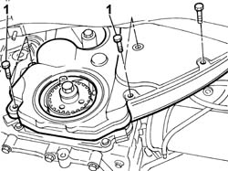
Applies to: engines: 2.3 JTD 16V; all production periods
1. Position the tool for supporting the power unit, fastened to the suspension crossmember and to the lower crossmember, under the engine oil sump.
 | Description | Code | Function |
|---|---|---|---|
1 | Crossmember | 1.870.735.000 | Lower engine mounting beam |
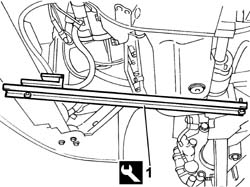
Applies to: engines: 2.3 JTD 16V; all production periods
- Lower the lift.
1. Undo the bolts fixing the power assisted steering system fluid reservoir mounting bracket.
2. Disconnect the fluid pipes from the reservoir and seal them.
3. Remove the power assisted steering fluid reservoir, complete with bracket.
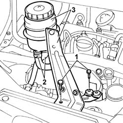
Applies to: engines: 2.3 JTD 16V; all production periods
1. Disconnect the electrical connection for the right front light cluster.
 | Description | Connector |
|---|---|---|
1 | Right headlamp | F011 |
2. Disconnect the bands at the two ends and remove the air pipe from the air/air heat exchanger to the intake manifold.
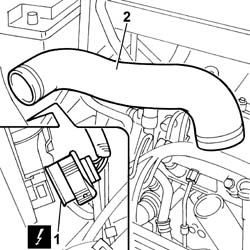
Applies to: engines: 2.3 JTD 16V; all production periods
1. Disconnect the bands retaining the coolant pipes to the reservoir.
2. Release the electrical connection from the housing.
3. Undo the nuts fixing the expansion tank.
4. Disconnect the water pump coolant supply pipe (4a) and remove the expansion tank (4b).
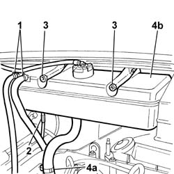
Applies to: engines: 2.3 JTD 16V; all production periods
1. Undo the bolts and the nut fixinf the flexible mounting to the rigid power unit support on the engine.
2. Undo the nuts fixing the engine mounting to the bodyshell.
3. Remove the flexible mounting from the engine compartment.
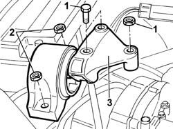
Applies to: engines: 2.3 JTD 16V; all production periods
1. Undo the upper bolts fixing the timing belt cover.
- Raise the vehicle.
2. Remove the cover from the lower part of the vehicle.
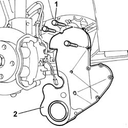
Applies to: engines: 2.3 JTD 16V; all production periods
Refitting
Removing- Fit the timing belt protective cover.
- Tighten the lower fixing bolts.
- Lower the vehicle.
- Tighten the upper bolts fixing the timing cover.
- Fit the flexible mounting in the housing in the engine compartment.
- Tighten the nuts fixing the engine mounting to the bodyshell to torque.
 | Value - daNm | Fastening | Component | Ø |
|---|---|---|---|---|
. | (body block) 5 | Nuts | FRONT FLEXIBLE MOUNTING BLOCKS, POWER UNIT | M10 |
- Tighten the nut and the two bolts fixing the flexible mounting to the timing side rigid power unit support.
| Value - daNm | Fastening | Component | Ø |
|---|---|---|---|---|
. | (Rigid mount on engine) 5 | Bolt | FRONT FLEXIBLE MOUNTING BLOCKS, POWER UNIT | M10 |
| Value - daNm | Fastening | Component | Ø |
|---|---|---|---|---|
. | (Rigid mount on engine) 8 | Nut | FRONT FLEXIBLE MOUNTING BLOCKS, POWER UNIT | M12 |
- Fit the engine coolant reservoir.
- Tighten the fixing nuts.
- Connect the coolant reservoir coolant pipes.
- Secure the electrical connection to the housing on the reservoir.
- Fit the air/air heat exchanger air pipe to the intake manifold.
- Connect the electrical connection for the right front light cluster.
| Description | Connector |
|---|---|---|
. | Right headlamp | F011 |
- Fit the power assisted steering fluid reservoir, complete with bracket.
- Connect the fluid pipes to the reservoir and tighten the bolts fixing the power assisted steering fluid reservoir mounting bracket to the crossmember.
- Raise the vehicle.
- Remove the tool positioned previously under the engine oil sump for supporting the power unit.
| Description | Code | Function |
|---|---|---|---|
. | Crossmember | 1.870.735.000 | Lower engine mounting beam |
- Fit the auxiliary shaft drive belt fixed tensioner.
- Tighten the fixing bolt to torque.
| Value - daNm | Fastening | Component | Ø |
|---|---|---|---|---|
. | 2.5 | Bolt | DRIVE BELT FIXED TENSIONER MOBILE VARIOUS | M10 |
- Fit the auxiliary shaft drive belt automatic tensioner.
- Tighten the fixing bolt to torque.
| Value - daNm | Fastening | Component | Ø |
|---|---|---|---|---|
. | 2.5 | Bolt | ALT./AUXILIARY DRIVEBELT MOBILE VARIOUS | M8 |
See in Op. 1092A10
Op. 1092B72 POWER STEERING PUMP DRIVE BELT - ALTERNATOR - R&R
Op. 4450B04 RIGHT FRONT WHEEL R R
Op. 7055B54 UNDER-ENGINE GUARD - R R
- Lower the vehicle.
- Remove the vehicle from the lift.
Applies to: engines: 2.0 16V; all production periods
Removing
RefittingOp. 7055B54 UNDER-ENGINE GUARD - R R
Op. 1092C11 POWER STEERING PUMP DRIVE BELT - R R FOR VERSIONS WITH AIR CONDITIONER
Op. 1092B40 AIR CONDITIONER COMPRESSOR/ALTERNATOR DRIVE BELT - R + R
See in Op. 1092A12
1. Undo the bolts fixing the bracket to the protective timing cover (1a) and remove the bracket (1b) and the small bracket (1c).
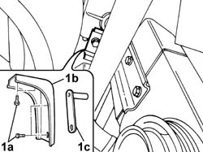
Applies to: engines: 2.0 16V; all production periods
1. Undo the fixing bolts (1a) and remove the (lower) protective timing cover (1b).
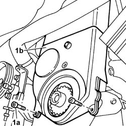
Applies to: engines: 2.0 16V; all production periods
- Lower the vehicle.
- Release the pipes from the springs on the protective timing cover.
1. Undo the fixing bolts (1a) and remove the upper protective timing cover (1b).
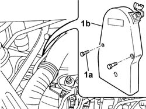
Applies to: engines: 2.0 16V; all production periods
Refitting
Removing- Fit the (upper) timing belt protective cover.
- Tighten the bolts fixing the (upper) protective timing belt cover.
- Attach the pipes to the fastening springs.
- Raise the vehicle.
- Fit the (lower) protective timing belt cover.
- Tighten the bolts fixing the (lower) protective timing belt cover.
- Fit the small bracket and the bracket for the protective timing belt cover.
- Tighten the bolts fixing the bracket joining the protective timing belt covers.
See in Op. 1092A12
Op. 1092B40 AIR CONDITIONER COMPRESSOR/ALTERNATOR DRIVE BELT - R + R
Op. 1092C11 POWER STEERING PUMP DRIVE BELT - R R FOR VERSIONS WITH AIR CONDITIONER
Applies to: all engines; all production periods
Removing
Refitting- Disconnect the negative battery terminal.
See in Op. 1092A12
Op. 7055B54 UNDER-ENGINE GUARD - R R
See in Op. 1008B10
1. Undo the fixing bolts (1a) for the protective timing cover (1b) and remove it.
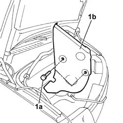
Applies to: all engines; all production periods
- Raise the vehicle.
1. Undo the fixing bolts (1a) for the additional protective timing cover (1b).
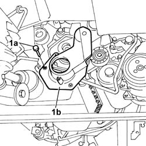
Applies to: all engines; all production periods
Refitting
Removing- Place the additional protective timing cover in position and secure it using the bolts.
- Lower the vehicle.
- Fit the protective timing cover and tighten the fixing bolts.
See in Op. 1008B10
Op. 7055B54 UNDER-ENGINE GUARD - R R
See in Op. 1092A12
Applies to: engines: 2.0 JTD 8V; all production periods
Removing
Refitting- Position the vehicle on the lift.
- Raise the vehicle.
Op. 7055B54 UNDER-ENGINE GUARD - R R
Op. 4450B04 RIGHT FRONT WHEEL R R
Op. 1092G10 SINGLE ENGINE BELT R R
See in Op. 1092A10
1. Position the tool for supporting the power unit fastened to the crossmember for the suspension and to the lower crossmember under the engine oil sump.
| Description | Code | Function |
|---|---|---|---|
1 | Crossmember | 1.870.735.000 | Lower engine mounting beam |
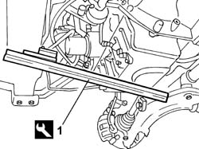
Applies to: engines: 2.0 JTD 8V; all production periods
- Lower the vehicle.
1. Undo the bolts securing the power steering fluid reservoir bracket.
2. Remove the power assisted steering fluid reservoir, complete with bracket, from the housing.
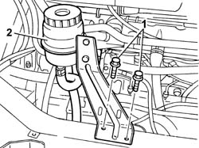
Applies to: engines: 2.0 JTD 8V; all production periods
- Raise the vehicle.
1. Remove the heat shield for the EGR exhaust gas pipe.
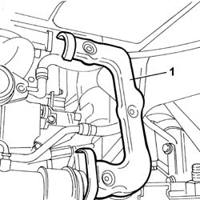
Applies to: engines: 2.0 JTD 8V; all production periods
1. Undo the bolts fixing the exhaust gas supply pipe to the exhaust manifold.
- Lower the lift.
2. Undo the bolts fixing the EGR pipe to the intake manifold.
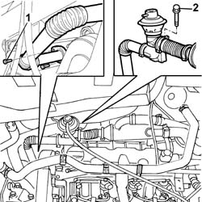
Applies to: engines: 2.0 JTD 8V; all production periods
1. Undo the nuts fixing the mounting to the bodyshell.
2. Undo the bolts fixing the flexible mounting to the rigid support on the engine.
3. Remove the flexible mounting from the engine compartment.
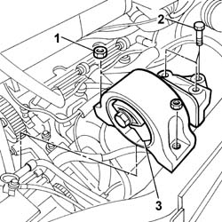
Applies to: engines: 2.0 JTD 8V; all production periods
1. Undo the fixing bolts.
2. Remove the upper timing belt guard.
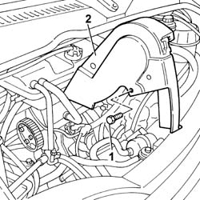
Applies to: engines: 2.0 JTD 8V; all production periods
1. Undo the fixing bolts.
2. Remove the side timing belt guard.
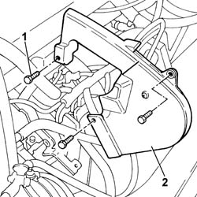
Applies to: engines: 2.0 JTD 8V; all production periods
- Raise the lift.
1. Undo the fixing bolts.
2. Remove the lower timing belt guard.
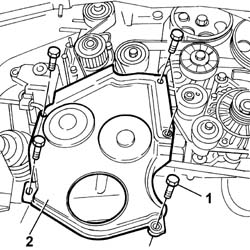
Applies to: engines: 2.0 JTD 8V; all production periods
Refitting
Removing- Fit the timing belt lower guard and tighten the fixing bolts.
- Lower the vehicle.
- Fit the timing belt side guard and tighten the fixing bolts.
- Fit the upper timing belt guard.
- Fit the flexible mounting in the housing in the engine compartment.
- Tighten the nuts fixing the flexible mounting to the bodyshell.
| Value - daNm | Fastening | Component | Ø |
|---|---|---|---|---|
. | (body block) 5 | Nuts | FRONT FLEXIBLE MOUNTING BLOCKS, POWER UNIT | M10 |
- Tighten the nut and the two bolts fixing the flexible mounting to the timing side rigid power unit support to torque.
| Value - daNm | Fastening | Component | Ø |
|---|---|---|---|---|
. | (Rigid mount on engine) 5 | Bolt | FRONT FLEXIBLE MOUNTING BLOCKS, POWER UNIT | M10 |
| Value - daNm | Fastening | Component | Ø |
|---|---|---|---|---|
. | (Rigid mount on engine) 8 | Bolt | FRONT FLEXIBLE MOUNTING BLOCKS, POWER UNIT | M12 |
- Tighten the bolts fixing the EGR pipe to the intake manifold.
- Tighten the bolts fixing the exhaust gas supply pipe to the exhaust manifold.
- Fit the heat shield for the EGR exhaust gas pipe.
- Lower the vehicle.
- Fit the power assisted steering fluid reservoir complete with bracket and tighten the fixing bolts.
- Raise the vehicle.
- Remove the tool underneath the engine oil sump supporting the power unit.
| Description | Code | Function |
|---|---|---|---|
. | Crossmember | 1.870.735.000 | Lower engine mounting beam |
See in Op. 1092A10
Op. 1092G10 SINGLE ENGINE BELT R R
Op. 4450B04 RIGHT FRONT WHEEL R R
Op. 7055B54 UNDER-ENGINE GUARD - R R
- Lower the vehicle.
- Remove the vehicle from the lift.
Topics linked from this page (6)
- 1092B40 AIR CONDITIONER COMPRESSOR/ALTERNATOR DRIVE BELT - R + R
- 1092B72 POWER STEERING PUMP DRIVE BELT - ALTERNATOR - R&R
- 1092C11 POWER STEERING PUMP DRIVE BELT - R R FOR VERSIONS WITH AIR CONDITIONER
- 1092G10 SINGLE ENGINE BELT R R
- 4450B04 RIGHT FRONT WHEEL R R
- 7055B54 UNDER-ENGINE GUARD - R R